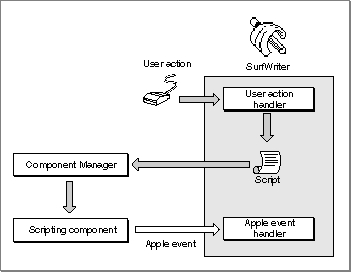
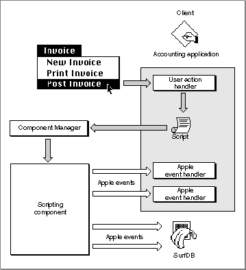

Legacy Document
Important: The information in this document is obsolete and should not be used for new development.
Important: The information in this document is obsolete and should not be used for new development.


Applications That Manipulate and Execute Scripts
Like sound resources, scripts can be stored either as separate files with their own icons in the Finder or within an application or its documents. Your application can store and execute scripts regardless of whether it is scriptable or recordable. If your application is scriptable, however, it can execute scripts that control its own behavior, thus acting as both the client application and the server application for the corresponding Apple events.Your application can establish a connection with any scripting component that is registered with the Component Manager on the same computer. Each scripting component can manipulate and execute scripts written in the corresponding scripting language (or, as in the case of AppleScript, one of the scripting language's dialects) when your application calls the standard scripting component routines.
You can use the standard scripting component routines to
Figure 1-10 shows how an application might execute a script that controls its own behavior. The appropriate user action handler executes the script in response to a user action, which can be almost anything: choosing a menu command, clicking a button, tabbing from one table cell to another, and so on. The script might consist of a single statement that describes some default action, such as saving or printing, or a series of statements that describe a series of tasks, such as setting default preferences or styles. Figure 1-10 shows a script that corresponds to a single Apple event, but the script could just as easily correspond to a whole series of Apple events. If your application allows users to modify such a script, they can modify the behavior of your application to suit their needs.
- get a handle to a script so you can save the script in a preferences file, in the data fork of a document, or as a separate script file
- manipulate scripts associated with any part of your application or its documents, including both Apple event objects and other objects defined by the application
- let users record and edit scripts
- compile and execute scripts
Figure 1-10 Controlling an application's own behavior by executing a script

Your application can associate a script with any Apple event object or application-defined object and execute the script when that object is manipulated in some way. The script can describe actions to be taken by your application, as in
Figure 1-10, or actions to be taken by several applications. For example, a user of a word-processing application might attach a script to a specific word so that the application executes the script whenever that word is double-clicked. Such a script could trigger Apple events that look up and display related information from a separate document, run a QuickTime movie, perform a calculation, play a voice annotation, and so on.Figure 1-11 shows one way that a script can be used to control two or more applications. When a user chooses the Post Invoice command in the accounting application, the user action handler for that menu command executes a default script for posting an invoice. That script might describe actions such as saving the invoice, updating the sales journal, and so on. The scripting component sends Apple events to the accounting application to perform these actions.
Figure 1-11 Posting an invoice and updating a database by executing a script

The accounting application also allows users to open the default invoice-posting script in Script Editor and modify it so that additional actions are performed when it is executed. For example, as shown in Figure 1-11, the script could instruct the SurfDB application to update a database of customer information in addition to performing the default posting actions. In this case, the scripting component sends Apple events to both the accounting application and SurfDB to carry out all the actions described by the script.
There is no limit to the actions such a script can describe. In addition to sending the Apple events shown in Figure 1-11, the invoice-posting script could be used to trigger Apple events that cause other applications to perform a credit check, send the invoice to the customer by electronic mail, forward inventory information to a remote server on the network, and so on.
The chapter "Scripting Components" in this book describes how your application can use the standard scripting component routines to manipulate and execute its own scripts and allow users to modify those scripts.